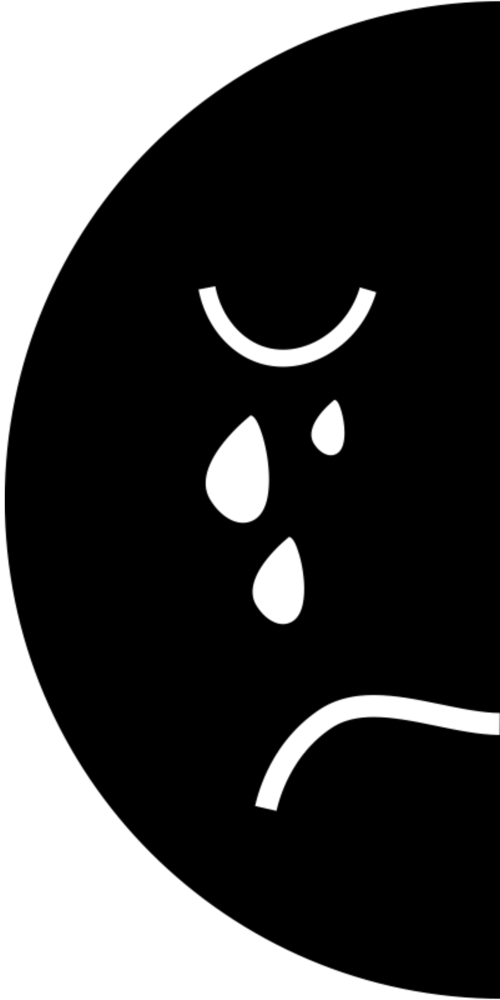
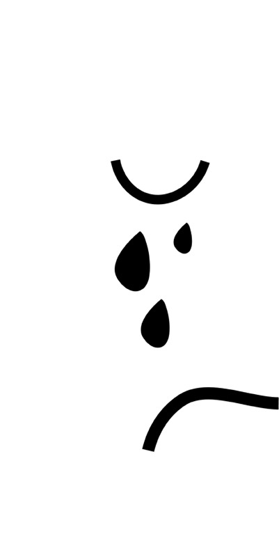

depression effects
- Long-lasting sadness or irritability.
- Extremely high and low moods.
- Excessive fear, worry, or anxiety.
- Social withdrawal.
- Dramatic changes in eating or sleeping habits.
manic effects
- Inflated self-esteem or grandiosity.
- Decreased need for sleep (e.g., feels rested after 3 hours of sleep).
- More talkative than usual, or acts pressured to keep talking.
- Flights of ideas or subjective experience that thoughts are racing.
- Increase in goal directed activity, or psychomotor acceleration.